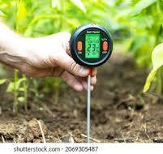
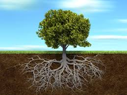
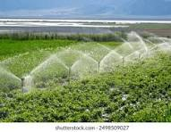

Understanding Soil Moisture
- Soil moisture refers to the amount of water stored in the soil, which is essential for the growth and survival of plants.
- It affects plant health, soil temperature, and microbial activity.
- Maintaining proper soil moisture ensures balanced crop yield and water conservation.
- Too much water can cause oxygen deficiency in roots, while too little causes drought stress.
- Soil moisture is commonly measured using sensors, probes, or satellite imaging techniques.
- It plays a major role in irrigation planning, hydrological modeling, and climate forecasting.
- Soil texture, organic matter, and vegetation influence how much water soil can retain.
- Monitoring soil moisture helps improve agricultural efficiency and sustainability.


